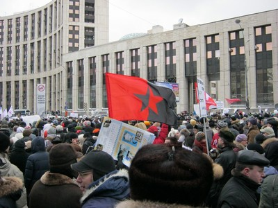

Interview mit einem Anarchisten aus Russland
[Und noch ein mal ein – hoffentlich spannendes Interview. Es war abzusehen, dass Oberst Putin genau wie Oberst Kaddafi es irgandwann mal zu weit treibt, zu unverschämt wird. Dennoch ist die Hoffnung auf einen wirklichen Umsturz in Russland noch zu wage, noch zu fern, nach einem Bürgerkrieg ist uns z.B. nicht – aber den Tschetscheniern wars auch nicht – und der großrussische Nationalismus ist leider immer noch viel zu stark. Aber dass der ehemalige KGB-Offizier so elendlich in der Pissrinne mit einer Kopfverletzung abkratzt wie sein libyscher Kollege, das wünschen wir ihm nicht. Trotz allem nicht, obwohl wir schon fucking viele Gründe dafür hätten… Der folgende Text ist, wie gesagt, hoffentlich, spannend und wer zwischen den Zeilen lesen kann, wird – wie immer – doppelt belohnt. Oirer BiKri.]
 Lass uns damit beginnen, dass du dich selbst kurz vorstellst und über deine Gruppe erzählst.
Hallo erst ein mal. Ich repräsentiere Anarchistische Gruppe aus Moskauer Region (PGA), die, wenn mich mein Gedächtnis nicht täuscht, seit 2008 existiert. Bis vor kurzem waren wir Mitglied in der Assoziation der Bewegungen der AnarchistInnen (ADA), aber aufgrund von Konflikten waren wir gezwungen, die Mitarbeit in dieser Organisation aufzukündigen (obwohl einige von uns da immer noch sind). Unsere ideologische Zugehörigkeit ist schwer zu beschreiben, ich kann nur eines sicher sagen – dass alle GenossInnen sich selbst als AnhängerInnen des sozialen Anarchismus ansehen, seien es Syndikalisten, Kommunisten oder Individualisten. Wir treten immer für direkte Demokratie und soziale Gerechtigkeit ein und stehen für antiimperialistische Positionen (denn Russland scheint uns ein viel gefährlicheres Imperium als die USA). Die Gruppe leistet seit Jahren agitatorisch-propagandistische Arbeit, gibt Flugblätter und Zeitungen mit geringer Auflage heraus. Insgesamt handeln wir nicht so wie die Mehrheit russischer AnarchistInnen – schlecht besuchten Kundgebungen mit Elementen von Punk-Konzerten haben wir schon immer Treffen mit streikenden Arbeitern oder Einwohnern, die für den Erhalt von Parks und Wäldern kämpfen (ein sehr brisantes Thema in Russland), vorgezogen; Aktionen gegen den Krieg in Tschetschenien, landesweite Kampagnen für Arbeiterrechte (die von Mitgliedern der Konföderation Revolutionärer Anarcho-SyndikalistInnen – IAA z.B. vernachlässigt und in Grund und Boden kritisiert werden). So ungefähr.
Könntest du die aktuelle ökonomische und politische Situation in Russland beschreiben? Anders gesagt, wie sehen die Anarchisten der PGA das heutige Russland?
Naja, es ist ziemlich einfach – wir sind der Meinung, dass wir ein ziemlich offen autoritäres staatskapitalistisches Regime haben. Große Konzerne sind so stark in den Machtapparat eingebunden, dass nicht einmal klar ist, was zuerst da war – entweder hat der Staat sich Anteile in diesen Unternehmen unter den Nagel gerissen, oder haben die Unternehmen eigene Leute in führende Posten gesetzt. Medwedjew z.B. war eine Weile lang in der Führungsebene von „Gasprom“, des mächtigsten Konzerns in Russland. Und fast jeder Direktor eines Industrie- oder landwirtschaftlichen Betriebs oder einer Bildungseinrichtung ist Mitglied der Partei „Einiges Russland“. Sieht der UdSSR ähnlich, die die Planwirtschaft gegen etwas anderes eingetauscht hat (als freien Markt kann man unsere Wirtschaft wohl nicht bezeichnen).
Hinsichtlich der politischen Freiheit ist es im Prinzip genau so schlimm: für das Anbringen von Flugblättern kann man einfach 5 Tage Arrest bekommen, Druckereien sind für das Drucken von politisch heikler Literatur unzugänglich, das Internet wird in Bildungseinrichtungen oder mancherorts sogar in privater Nutzung zensiert.
Aber seit Dezember dieses Jahres wackelt die Macht und ist gezwungen worden, sich unter dem Druck von großen Demonstrationen zurück zu ziehen. Außerdem möchte ich anmerken, dass bereits seit 10 Jahren in den südlichen Regionen ein bewaffneter Konflikt entlang der Linie Polizeieinheiten / Partisanen von Kaukasus andauert. Wir neigen nicht dazu, dies für Aktivitäten einer mysteriösen Al-Qaida zu halten, daran ist in erster Linie die brutale und zynische Politik der Machthaber schuld.
Was die soziale Lage angeht – damit ein durchschnittlicher russischer Bürger sich z.B. ein modernes Fernsehgerät kaufen kann, muss er 2-3 Monate was vom Lohn zurücklegen, häufiger ein halbes Jahr lang. Um eine Wohnung zu kaufen, muss man entweder Jahrzehnte lang sparen, oder einen Kredit bei einer Bank aufnehmen. Damit will ich keine Statistiken auspacken, sondern am Beispiel zu zeigen, was und wie bei uns passiert.
Wie ist die Situation in der libertären / anarchistischen Bewegung Russlands (oder der ehemaligen UdSSR)?
Lass mich über Russland erzählen.
Die Situation ist in der Tat katastrophal. Die Bewegung kann man in vier Tendenzen aufteilen.
1) Stubentheoretiker. Die bekanntesten in Russland sind die hiesige Sektion der IAA. Sie sind berühmt für Skandale innerhalb der Bewegung, werfen anderen AnarchistInnen Reformismus vor oder dass sie Interessen anderer Staaten bedienen. Während der Dezemberproteste gaben sie eine Serie von Karikaturen heraus, wo sie Protestierende als „Hunde der Demokratie“ bezeichneten (in der Tat – „orangefarbene Hunde“, diese Variante wird man aber in Deutschland nicht verstehen, glaube ich). (Eigentlich nach der liberal-demokratischen „Orangenen Revolution“ in der Ukraine benannt, die den Mächtigen in Russland ein Schreckgespenst ist – A.d.Ü.) Ihre Hauptbeschäftigung ist das Übersetzen von Texten europäischer AnarchistInnen und deren Veröffentlichung auf ihrer Seite, im echten Leben hat sie selten jemand gesehen.
2) Bewegung „Autonome Aktion“ – subkulturelle Gruppen von Jugendlichen, die sich AnarchistInnen nennen. Es gibt kein Programm, kein Statut, aber auf Kongressen wird regelmäßig ein Zentralkomitee gewählt, es gibt Mitgliedsbeiträge für eben dieses Komitee usw. Gilt als eine anarchistische Organisation, in der Praxis aber versammeln sie unter eigenen Flaggen sozial-demokratische Jugendliche. Verstehen sich ganz gut mit russischen TrotzkistInnen. Neigen dazu, schlecht besuchte Kundgebungen mit Pyrotechnik zu organisieren. Vor kurzem veranstalteten sie eine Demo gegen muslimische Feiertage (die ihrer Meinung nach gegen die GESETZE verstoßen), von denen höchstens sie selber wissen. Eine sehr komische Organisation, die zudem noch mit Insurrektionalisten sympathisiert.
3) Insurrektionalisten. Bekannt ist nur, dass sie versuchen, Polizeistützpunkte abzufackeln, die sich in Russland in der Regel in den ersten Etagen von Wohnhäusern befinden. Meinen, dass sie gegen den Staat und die konservative Gesellschaft kämpfen.
4) Kleine Gruppen wie die unsere, die Positionen des klassischen Anarcho-Kommunismus und Individualismus einnehmen (wie die von Tucker, Spooner, Alexej Borowoj).
In dieser Hinsicht wäre interessant, was momentan ADA ist und was sie macht. Du sagtest, die PGA war bis vor kurzem noch in der ADA. Könnt ihr mit anderen Gruppen im Rahmen der ältesten synthetischen anarchistischen Organisation Russlands nicht auskommen? Was sind die Gründe?
Naja, das ist eine heikle und komplizierte Frage – ein Teil unserer Genossen ist in der ADA geblieben. Es ist nicht so, dass wir nicht miteinander auskommen konnten, die Sache ist anders – wir fanden keine Unterstützung. Außer zwei Personen hat kein anderes Mitglied der Föderation in den letzten JAHREN ein einziges unserer Agitationsprojekten unterstützt, niemand ist an der Entwicklung der Druckpresse interessiert. Z.B. nach dem Teilaustritt der Gruppe aus der Assoziation hat diese die Einstellung ihres einzigen Presseorgans „Vintovka“ bekanntgegeben. Von unseren ehemaligen Genossen haben wir nur Vorschläge mitgekriegt, in den sozialen Netzen aktiv zu arbeiten und lange Artikel über den freien staatenlosen Markt gesehen. Nein, das alles ist nicht schlimm, hat doch noch Kropotkin über die Vielfalt der Eigentumsformen geschrieben. Es ist einfach nicht unser Ding, wir sind in vieler Hinsicht „Menschen der Tat“.
Wie siehst du die aktuelle Lage der Proteste nach den Wahlen? Was ist das – eine reale Krise der Repräsentation, wie es auch immer öfters anderswo passiert, oder einfach Spiele der Opposition?
Unsere Opposition ist schwach.
Die Roten arbeiten traditionell unter der Schirmherrschaft des Kremls – nur wenige Kommunisten in Russland sind nicht empört über den Zerfall der Armee des bürgerlichen Staates und stimmen Putin nicht zu in der Kritik des Westens.
Die liberale Opposition ist einfach schwach, bis Dezember war sie äußerst negativ gegenüber den Massen eingestellt und die gerade stattfindenden Demos waren für sie eine Überraschung.
Die Bevölkerung Russlands war nicht über das Wahlergebnis verärgert – es haben im Prinzip alle gewusst, wer gewinnt, sondern die Perspektive, noch 5 Jahre unter demselben Regime zu leben. Binnen weniger Monate sind in verschiedenen Städten informelle Zusammenschlüsse von Menschen aller Altersgruppen entstanden, die selbstbestimmt Kämpfe gegen die regierende Partei und auch gegen alle anderen geführt haben. Am 5. und 10. Dezember fanden glücklicherweise liberale Kundgebungen statt. Hätten am 5.12. Kommunisten (gemeint ist die KPRF, die käufliche Nachfolgerin der KPdSU – A.d.Ü.) demonstriert, wären die Leute zu ihnen gegangen, so aber… Also, ein glücklicher Zufall. Momentan kann man unter den Protestierenden zwei Tendenzen ausmachen – der größte Teil tritt aktiv gegen das Aufkommen von selbsternannten Anführern wie Nemtzow, Ryzhkow (Liberaler und Alt„demokrat“ – A.d.Ü.) usw. ein, der seine Auftritte mittels Internetseiten vorbereitet und versucht, bekannte Intellektuelle an seine Seite zu locken, die ohnehin die Welle der Wut im Dezember unterstützt haben. Das sind Journalist Parfjonow und Schriftsteller Boris Akunin (seine Krimis sind in Russland sehr beliebt), deren Auftritte am 10. Dezember stürmischen Applaus von hunderttausend Menschen hervorriefen. Dieselben Protestierenden kritisieren vehement die Teilnahme von Kommunisten und Nationalisten an kommenden Kundgebungen, arbeiten allmählich neue Losungen der Bewegung heraus. Also, die Bevölkerung ist erwacht und versucht, die Welt aktiv ohne Zensur und Autoritarismus zu erforschen. Ich würde das eine spontane demokratische selbstorganisierte föderative Bewegung nennen. Den zweiten Teil bilden ewige Radikale (Liberale, Nationalisten usw.), die versuchen, das Ganze als eine demokratische russische Revolution darzustellen. Eigentlich ist gegen sie die ganze Kritik des erstes Teil der AktivistInnen gerichtet, denn heute strömen BürgerInnen auf die Straßen mit einem einzigen Wunsch – sich vom Joch des zentralisierten Staates zu befreien. Was daraus wird, kann ich schwerlich sagen, ich glaube aber, dass weder ein nationalistischer Putsch oder Neoliberalismus das Resultat sein werden. Die Bevölkerung ist sowohl des Staatskapitalismus als auch des Staatskommunismus müde, von nationalistischen Parolen ist jedeR zweiteR angewidert… Die Bewegung vom 10. Dezember (so nennen viele die winterliche Protestwelle in Russland) hat momentan zwei Probleme: nicht ausformulierte soziale Losungen und nicht ausreichende Koordinationszentren vor Ort. Daran wollen wir in der nächsten Zeit arbeiten.
Von irgendwelchen Occupy-Protesten hab ich persönlich den Eindruck, dass auf die Straßen nicht diejenigen gegangen sind, die reale Gründe zur Empörung hatten, sondern aufgeschreckte Mittelschichten und StudentInnen, d.h. wiederum Kinder der Mittelschicht. Wie ist die Sozialstruktur der Wahl-Protesten in Russland, wer ist das auf den Straßen?
Die Occupy-Bewegung kann ich überhaupt nicht ernst nehmen – habe den Eindruck, dass es einfach so eine Meute ist, die sich um Probleme nicht kümmert, es geht nur darum, Masken aufzusetzen und irgendwas zu blockieren. Eine gefährliche Weise also, sich auszudrücken.
Im Dezember sind ein bisschen alle auf die Straßen gegangen, wie ein Kumpel von mir sagt. Arbeiterjugend, Studenten, Büroangestellte, d.h. es gibt keine dominante soziale Kraft. Es waren auch viele Menschen, die mit ihrer materiellen Lage nicht zufrieden sind… Insgesamt ist drum herum eine Mischung von Menschen aus unteren und mittleren Schichten; es erinnert mich an Februar in Libyen, als Anwälte und Straßenkehrer, Lehrer und Nomaden die Straßen von Bengasi füllten. Es wird hier noch nicht geschossen, ich hoffe, dass es auch ohne geht, aber die soziale Zusammensetzung sieht ganz ähnlich aus.
Wie in Libyen? D.h. es gibt eine Chance, dass das Putin-Regime fällt und nicht durch ein noch brutaleres ersetzt wird?
Nein, natürlich nicht. Als ich von Libyen gesprochen habe, meinte ich nicht den Umsturzprozess, sondern die unterschiedliche Gruppen der Protestierenden, d.h. die einzigen Analogien mit der Situation in diesem Land bestehen nur in der sozialen Zusammensetzung des Protestes in Russland. Habe gerade eben im Internet gelesen, LehrerInnen einer der Moskauer Schulen rufen zu neuen Protesten auf, und heute früh sah ich einen Straßenkehrer mit einem Button „Nein zur Partei Einiges Russland“. Haben uns gut über Politik unterhalten.
Das Regime Putin ist stärker als wir alle – die Größe des Polizeiapparates beträgt 3 Millionen Menschen, es ist sogar besser bewaffnet als Eliteeinheiten des Militärs. Und in der letzten Zeit gibt die Macht klein bei, indem die Zensur gelockert wird (obwohl nicht so sehr – im Fernsehen sind 99% der Berichte über Proteste verboten). Also, dieses Jahr werden wir kein Glück haben, dieses Jahr sicher nicht…
Ja, die Analogie mit dem Bürgerkrieg in Lybien war unglücklich. Willst du aber sagen, dass es auch nicht zu Tahrir am Roten Platz kommt? In diesem Jahr natürlich nicht mehr, aber in der Perspektive – was haben diese Proteste für eine Tendenz? Was suchen dann die Libertären in diesen Protesten?
Demnächst wird das auch nicht passieren, denn die Menschen haben erst vor einem Monat versucht, die Macht offen zu kritisieren und gesehen, dass es eigentlich gar nicht so gefährlich ist. Eine andere Sache ist, dass Erfahrungen bei der Koordination fehlen und die Äußerungen zu sozialen Fragen sehr diffus sind. Die Tendenz der Proteste ist jetzt folgende – sie haben ein wenig an Massencharakter eingebüßt, sind aber stabil geworden. Ich denke, dass wir bis zu den Präsidentenwahlen noch einige mehr oder wenige große Kundgebungen erleben und dann kommt das entscheidende Moment – entweder geht die Bewegung ein oder sie entwickelt sich zu einem organisierten Massenprotest. Für Libertäre will ich nicht sprechen, denn ich zähle mich selbst zu Anarchisten. Libertäre sind die bereits erwähnte Autonome Aktion und KRAS-IAA. Die ersten werden ihren Schwachsinn fortsetzen, werden bei großen Demos Schlägereien mit Nationalisten provozieren (wovon sie schon stolz berichtet haben), und die letzteren – werden nach wie vor gegen „die vom Washington bezahlten“ Liberalen hetzen. Es ist also wirr. Wir aber, Gruppen von Anarchisten, werden versuchen, neue Mitglieder zu gewinnen und in den Massen Ideen von der Notwendigkeit der Selbstorganisation in Protestkampagnen zu säen. Mehr werden wir nicht schaffen, aber auch das wird ein echter Durchbruch vor dem Hintergrund des klinischen Todes der anarchistischen Bewegung in Russland.
Und wie reagieren die Protestierenden auf die anarchistische Agitation?
Weißt du, mit großem Interesse. Die Leute haben die traditionelle Opposition satt und „nicht-systemische“ Nationalisten nimmt niemand ernst, wie ich bereits gesagt habe. Eine andere Sache ist, dass es wie ein Zirkus angesehen wird, wenn die Agitation in Form einer lauten vermummten Menge rüberkommt, wie es ein Teil der Moskauer Anarchisten am 10. Dezember getan haben.
Also schauen wir den Erfolgen der Agitation optimistisch entgegen.
Wie könnten deiner Meinung nach europäische Libertäre / AnarchistInnen / KommunistInnen euch bei dieser Sache unterstützen?
Ich weiß nicht. Europäische Libertäre / AnarchistInnen verstehen offensichtlich die Realität in Russland nicht und sind eher bereit, den bekannteren Vertretern unserer anarchistischen Subkultur zu lauschen als denen, die tatsächlich vor Ort organisieren und kämpfen. Ehrlich gesagt, nach einem Briefwechsel mit Mitgliedern der IFA (Internationale Föderation der AnarchistInnen – A.Ü), sind mir westliche GenossInnen etwas suspekt – also mir persönlich wurde geschrieben, dass man gegen Religion kämpfen, „freemarkets“ und mehr Konzerte organisieren müsse – und das in einem Land, in dem z.B. kleinere Städte von der Mafia kontrolliert werden. Wenn meine westliche LeserInnen endlich kapieren, dass wir keine Ratschläge brauchen, dass europäische Taktik unter unseren Bedingungen nicht anwendbar sind, so können vielleicht noch einige Vorstellungen von der Unterstützung entstehen. Ich würde mir wünschen, dass Europa unsere Aktionen unterstützt, das ist das Programm-Minimum.
Quelle: FDA-IFA
Anarchistiesche Gruppe der Moskauer Region: mosreg.anarhist.org

1 Antwort auf „„Es einnert mich an Februar in Libyen…““